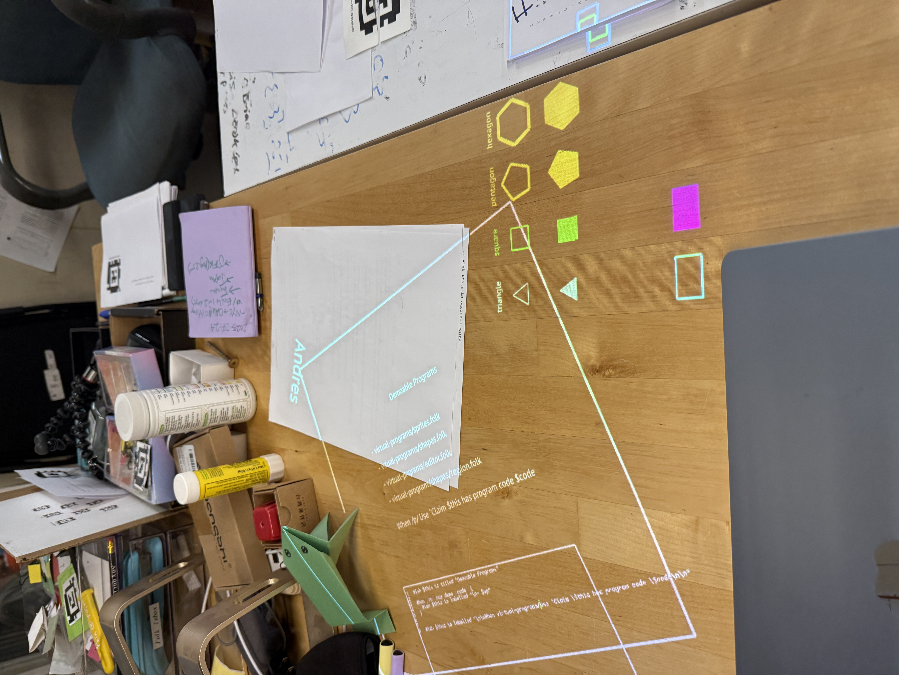
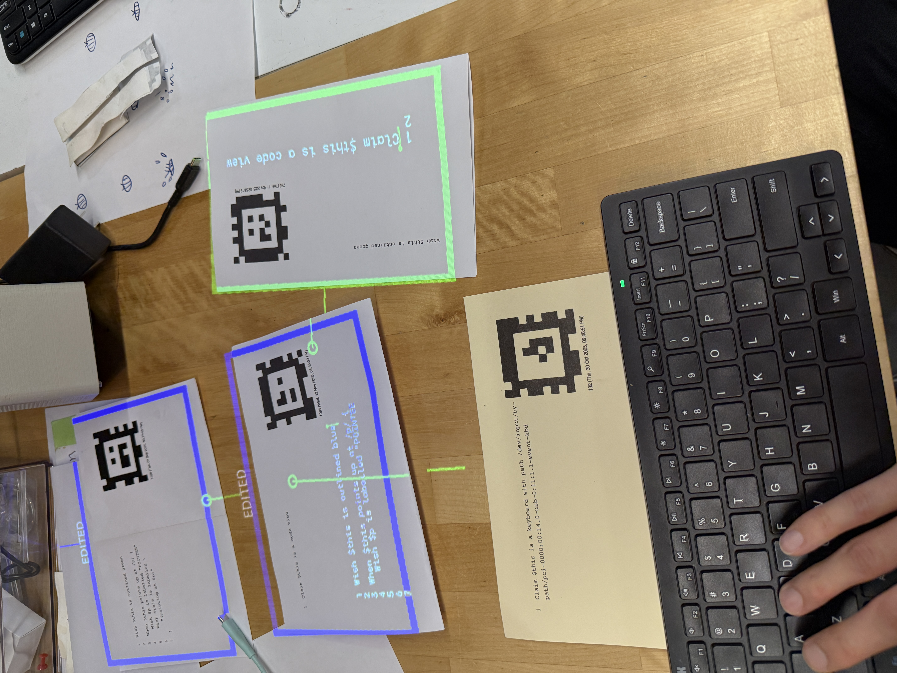
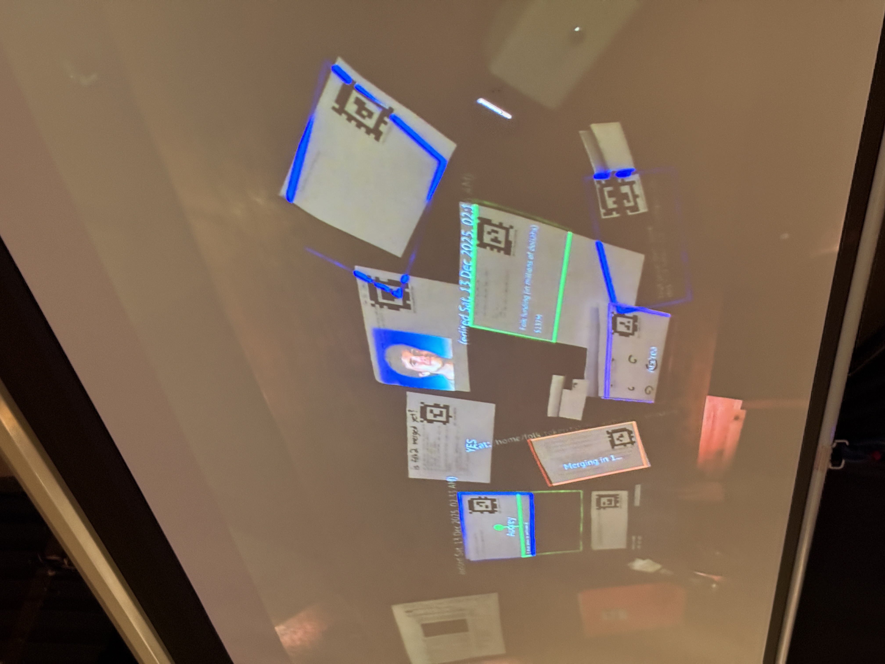

Folk Computer is a research project in Williamsburg exploring what physical computing can feel like when software becomes tactile and shared. The project asks: what if the computer was not a screen but a surface, a table, a room?
Contributions span fabrication, design, and community — building objects, producing educational zines and booklets, and organizing events including the Folk2 Launch Party at Hex House.


Work at Folk Computer sits at the edge of software and object-making. Physical cards become input devices; projectors turn surfaces into shared programming environments. The tactile and the computational are inseparable.
Educational materials — zines, booklets, event documentation — are designed to make the project's ideas accessible and shareable beyond the studio.